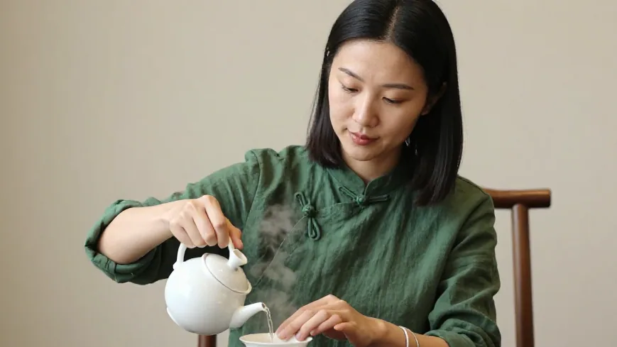
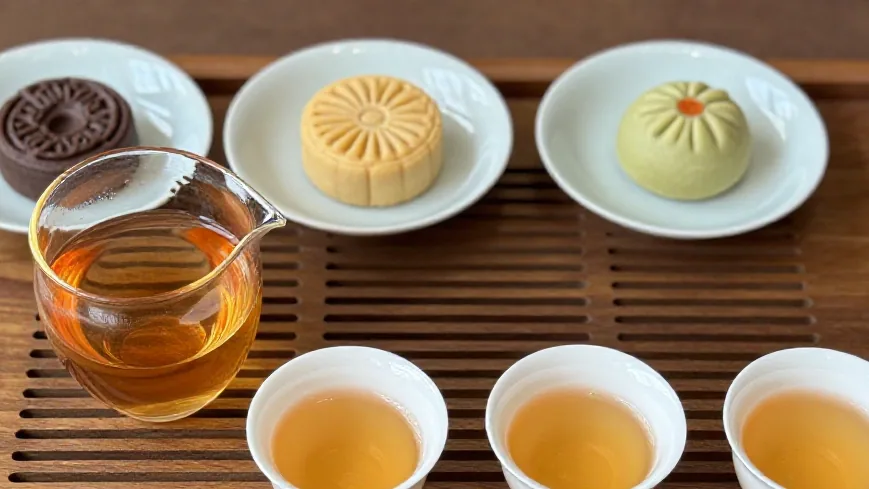
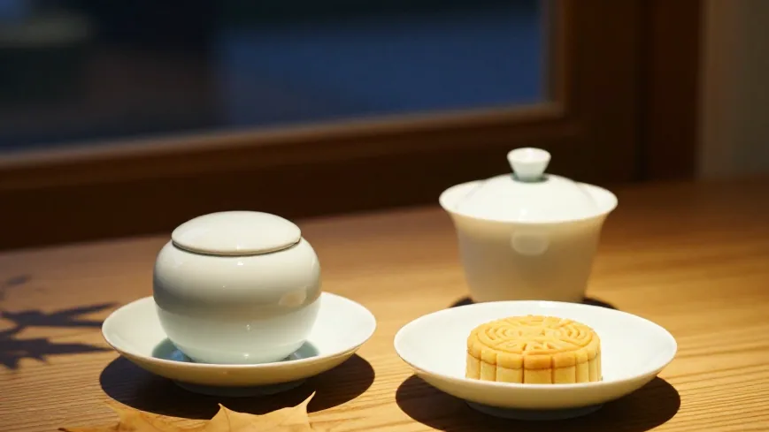
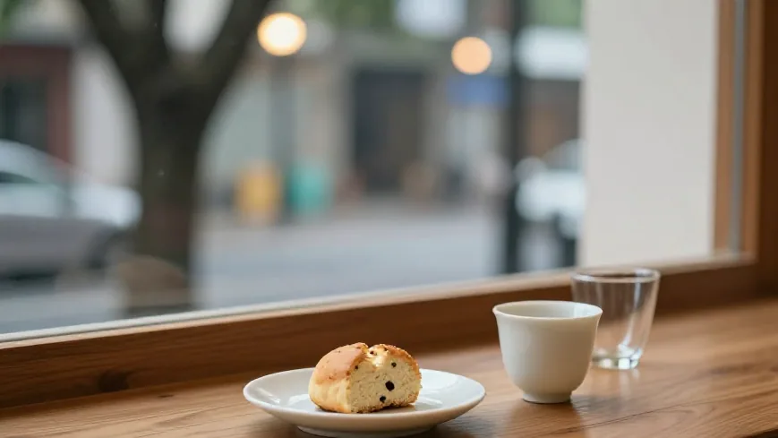

上午十点半，蜜兰香刚封好罐，姚老师拎着高山绿茶、陈老板抱着虾饺、小美穿着奶茶店围裙进来。阿凤姐擦手一笑：「今个下午，咱们不泡茶，泡个茶餐。」
🌿 开篇问答：茶与茶点怎么搭才对？
Q1：泡凤凰单丛配茶点，水温要不要变？
阿凤姐一句话讲透：「全程 100 度沸水，咸甜跟茶泡数『对』就行。」第一泡配虾饺、第二泡配枸杞糕、第三泡配芝麻糊、第四泡配陈皮糖，别让点心盖住茶香。
Q2：高香型单丛和老丛，分别配什么茶点？
高香型（蜜兰香、鸭屎香）香气冲、怕甜腻 → 配咸、鲜、微苦：虾饺、萝卜糕、蒸蛋；老丛、老茶甘甜深 → 配甜：潮州麦芽糖、陈皮糖、芝麻糊；陈皮普洱陈香足 → 配潮州麦芽糖最对。
Q3：惠州哪里能买到茶、还能聊茶餐搭配？
来 阿凤姐茶叶店（惠州凤凰茶业）！地址：惠州市惠城区东湖花园一区沿江商铺89-136，每天 9:00-21:00 营业，全年无休。电话：13435567385（微信同号，支持快递全国）。酒楼、茶馆、奶茶店的茶餐搭配与批发，都能坐下来聊。
【场景开头】
上午十点半，阿凤姐刚把最后一罐蜜兰香封好，店门口就响起一声熟悉的「咚咚」——姚老师拎着一袋刚烘的高山绿茶走进来，陈老板跟在后面，手里还抱着一盘从自家酒楼带来的虾饺；小美一身奶茶店围裙，坐在角落先要了一杯「冷泡鸭屎香」。店里水汽氤氲，窗外东湖花园的梧桐叶落得不急。阿凤姐笑着擦手：「今个下午，咱们不泡茶，泡个茶餐。」
【第一幕：引茶 —— 不是「配」，是「对」】
姚老师把茶罐放在案几上：「林姐，你这蜜兰香香得不行，但若配那种甜腻的点心，香气全被盖过去。」阿凤姐没反驳，直接拿出一套小老式白瓷碟，摆上刚出炉的潮州枸杞糕、惠州豆沙酥，和一小碟「茶餐」标配——芝麻糊。她指着陈老板：「你上次拿三十斤蜜兰香去酒楼，客人说香得像喝了花，可你配的是甜点心，第二轮茶汤就淡了。」陈老板点头：「我后来改了，茶点改成咸的——虾饺、萝卜糕、蒸蛋——茶一冲，香气往咸里一夹，反而更扎实。」这就是阿凤姐教的：**茶与茶点不是「配」字，是「对」字。** 高香型的凤凰单丛（蜜兰香、鸭屎香）要压住甜腻，要配咸、鲜、微苦；老丛、老茶则甘甜更深，配芝麻糊、陈皮糖、潮州麦芽糖，越喝越顺。小美插嘴：「我奶茶店以前卖冷泡，顾客拿走就走，留不住。后来我把冷泡鸭屎香做成茶点套餐——一杯冷泡加一块潮州糕点，顾客坐下喝完才走，复购涨了三成。」
【第二幕：泡茶 —— 温杯、称茶、提香，还有「茶餐」节奏】
阿凤姐动作没停：温杯（烫杯夹水）、称茶九克（小美要十克，因为要配点心）、提香五分钟。她把蜜兰香投进盖碗，高冲一百度水，第一泡洗茶，香气粉粉内敛，像泡进了潮州凤凰山的云雾。然后她把茶汤分到三个小杯：给姚老师、给陈老板、给小美。「泡茶有节奏，」她边出汤边说，「茶餐不是茶加点心，而是茶的第几泡配点心的第几口。」第一泡洗茶，配虾饺；第二泡出汤，配枸杞糕；第三泡开始浓，配芝麻糊；到第四泡精华，配老茶的陈皮糖。陈老板笑：「这跟我酒楼的茶点流水一样——客人先喝茶，再上点心，最后茶汤浓了，点心换咸味。」小美赶紧记手机：「这就是茶餐链路——茶的浓淡决定点心的咸甜。」

【第三幕：品茶 —— 惠州本地茶食的「穿越」】
茶汤透亮如琥珀，闻公道杯，花香与虾饺的鲜味在空气里碰了一下，像老茶馆的隔板。姚老师拿起一块潮州豆沙酥：「这酥皮里有陈皮的味道，和你这老丛茶一配，像民国茶引的味道。」阿凤姐点头：「这就是穿越——老茶农传下来的茶点不是点心，是**茶的延伸**。」她从柜里拿出一包陈皮普洱：「陈皮普洱泡久了，香气变陈香，配潮州麦芽糖最对；而新茶蜜兰香配咸虾饺，年轻人也能接受。」小美看着手机里客户发来的茶餐菜单：「我之前只卖冷泡，顾客觉得没仪式。后来我把茶餐做成三步：第一步温杯讲茶，第二步泡茶配点心，第三步留茶汤给下一轮。现在奶茶店的客人平均停留多了二十分钟，复购从一周一次变成一周两次。」她说的，是批发客户里的真实数据：小美是阿凤姐的下游客户，奶茶店从「卖茶」变成「卖茶餐」，下游赚了钱，敢拍胸脯保证货源正，这就是阿凤姐最看重的——**好货让下游也赚到、也敢卖、也敢拍胸脯。**

【第四幕：点题 —— 不是文艺，是生意的缝隙里写的人情】
夜色渐深，东湖花园的梧桐叶落得更急。陈老板起身，拍了拍口袋的茶叶订货单：「下个月酒楼要进二十斤蜜兰香，我这次不只给客人喝，给厨房配茶餐——虾饺配蜜兰香，萝卜糕配老茶。你这茶，不是卖出去的，是绑进餐桌的。」阿凤姐笑着把茶罐递过去：「好茶配好点心，才叫茶餐。这不是文艺，是惠州老茶馆里的生意经。」街角传来小吃摊的热气，虾饺的蒸汽和茶汤的香气在巷子里缠绕。阿凤姐未曾说「茶如人生」，只说：「茶少水少，就是最高境界；茶点要对，生意才对。」这话，像老茶农传给小美、传给陈老板，也传给下一家还没来找她的茶馆。

【尾声】
客人陆续离去，店里只剩茶汤的余味和一块没吃完的芝麻糊。小美在门口停下，回头看一眼柜子里那罐蜜兰香：「下回要说什么？」阿凤姐把标签纸递给她：「下回说说——老茶配陈皮糖，怎么把『老』卖成『新』。」窗外东湖花园的灯火亮了，茶馆的灯还亮着。

📍 惠州买茶去哪？阿凤姐茶叶店欢迎你
🏪 店铺：阿凤姐茶叶店（惠州凤凰茶业）
📍 地址：惠州市惠城区东湖花园一区沿江商铺89-136
📱 电话：13435567385（微信同号，支持全国快递）
⏰ 营业时间：每天 9:00-21:00，全年无休
🚗 停车：东湖花园沿街有停车位，导航搜索「凤凰茶业」即可
🍵 店内主营：潮州凤凰单丛全系列（蜜兰香、鸭屎香、老丛、黄枝香、芝兰香等）、新会陈皮、陈皮普洱、茶礼定制；酒楼、茶馆、奶茶店的茶餐搭配与批发均可谈。